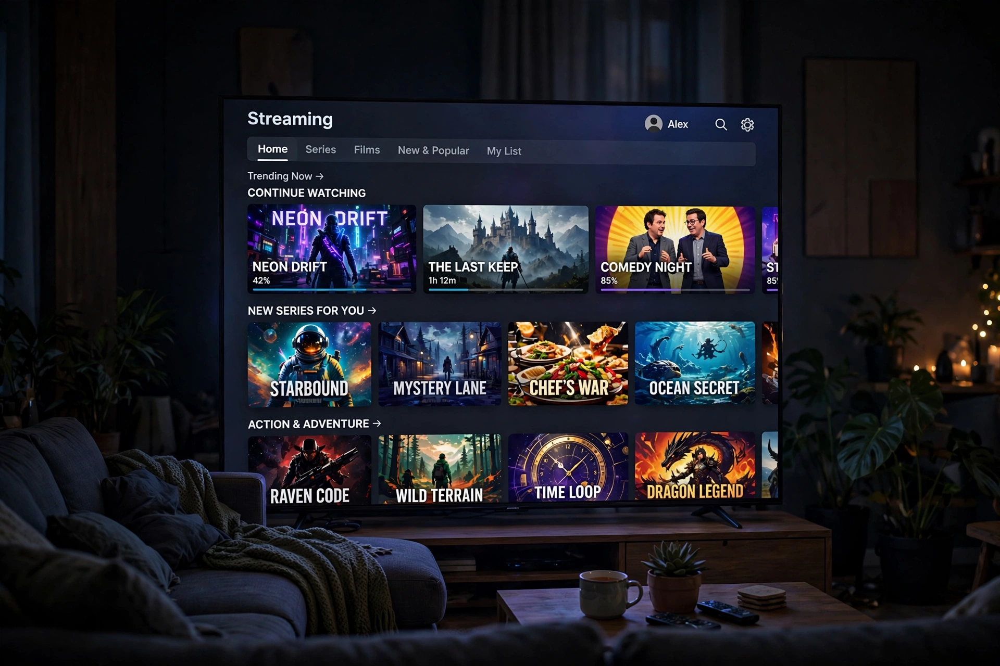

| Formerly | HBO Max (2020–2023) |
|---|---|
| Type of site | OTT streaming platform |
| Owner | Warner Bros. Discovery |
| Launched | May 27, 2020 (as HBO Max) |
| Headquarters | New York City, United States |
| Predecessor(s) | HBO Now, HBO Go, Discovery+ |
Max, formerly and still sometimes known as HBO Max, is an American subscription video on-demand streaming service owned by Warner Bros. Discovery. Launched in the United States on May 27, 2020 as HBO Max, the service draws on the libraries of HBO, Warner Bros., DC Entertainment, and numerous other WarnerMedia and Discovery properties. Following the 2022 merger of WarnerMedia and Discovery, Inc., the service was relaunched under the shortened name Max on May 23, 2023, incorporating most of the unscripted library of Discovery+.
HBO Max was announced in October 2018 as WarnerMedia's flagship direct-to-consumer platform, built around the HBO premium channel's catalogue plus Warner Bros. films, Turner networks content, and original programming branded as Max Originals. It replaced the earlier HBO Now and HBO Go services.
In April 2022, Discovery, Inc. completed its acquisition of WarnerMedia from AT&T, forming Warner Bros. Discovery. The combined company announced plans to merge HBO Max with Discovery+; the unified service launched as Max in May 2023, with a new blue visual identity replacing HBO Max's purple.
Max carries the full HBO original programming library, including acclaimed series such as The Sopranos, The Wire, Game of Thrones and its prequel House of the Dragon, Succession, and The Last of Us. Its catalogue also includes Warner Bros. theatrical films, DC Comics adaptations, Studio Ghibli films (in the US), Cartoon Network and Adult Swim programming, and Discovery's reality brands such as HGTV, Food Network, and TLC.
The service expanded to Latin America and the Caribbean in June 2021 and to parts of Europe in late 2021 and 2022. Following the Max rebrand, further European launches took place around the 2024 Summer Olympics, carried in partnership with Eurosport.